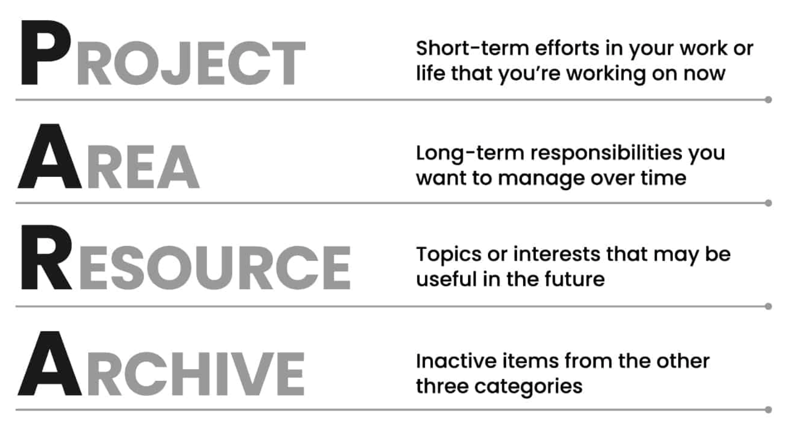

Projects
- Short-term efforts that you are working on now.
- They have a beginning and an end.
Areas
- Long-term responsibilities/areas.
- While there is no goal to reach, a standard to be maintained.
Resources
- Topics that may be useful in the future.
- Instead of using a dedicated folder, I prefer tags.
- I plan on storing tagged information in my daily notes.
- Any of these that are converted into full notes will be in the Inbox.
Archives
- Inactive items from the other categories.
- Essentially contains content no longer relevant.
- This helps remove clutter from your workspace.
